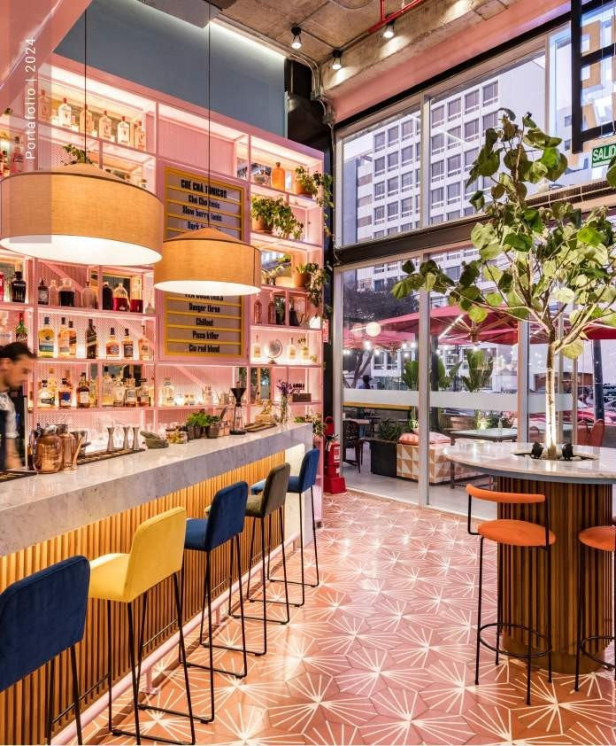
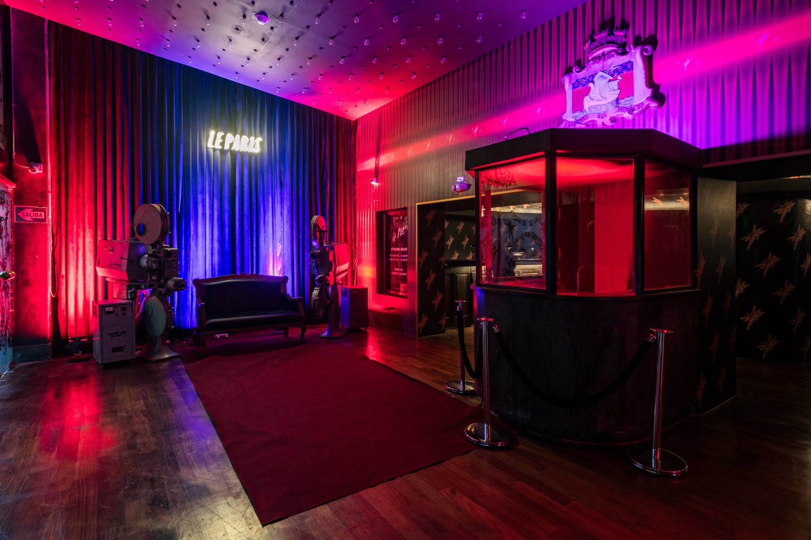
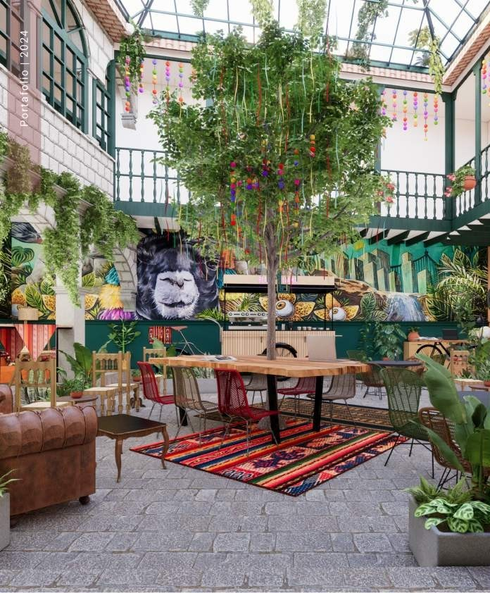
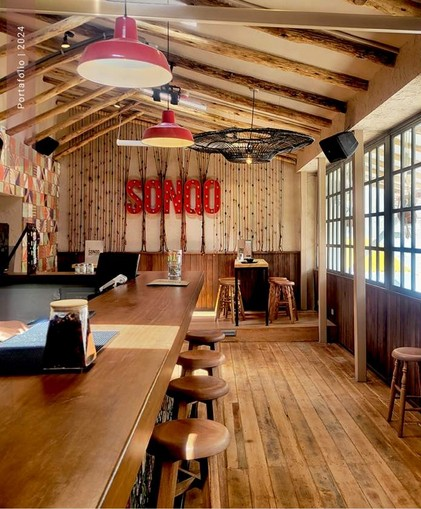
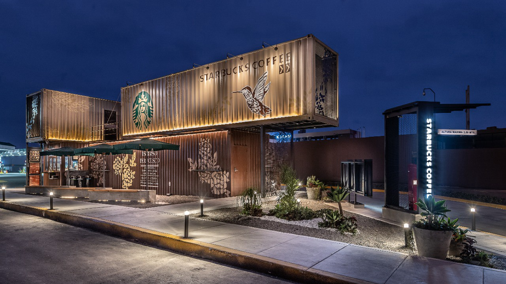
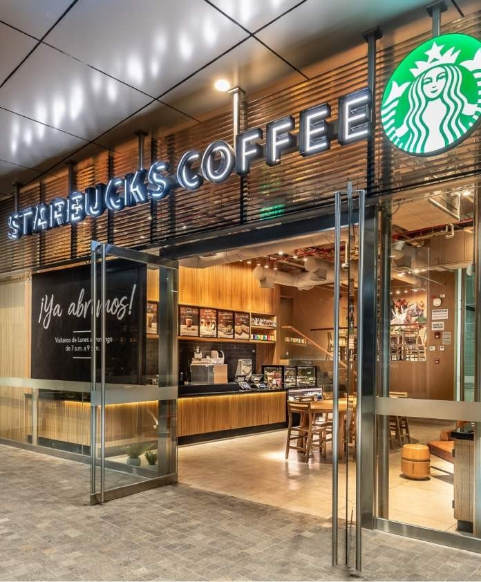

Bar de té y cócteles donde color, textura y operación se articulan alrededor de una barra central.
La primera lectura del portafolio: seis proyectos con identidad espacial distinta y documentación suficiente para presentarlos como protagonistas.

Bar de té y cócteles donde color, textura y operación se articulan alrededor de una barra central.

Recuperación de un local dentro del histórico cine Le Paris, conservando elementos originales y transformando su memoria en una nueva experiencia.

Casona colonial transformada en hostel boutique, organizada por un patio central y un diálogo entre tradición cusqueña y estética contemporánea.

Proyecto de bar con una materialidad cálida y una identidad vinculada a la experiencia del viajero.

Primer Starbucks drive-thru del Perú, resuelto íntegramente en contenedores marítimos y con una imagen modular reconocible.

Tienda número 100 de Starbucks en el Perú, desarrollada como proyecto integral dentro de un edificio corporativo.